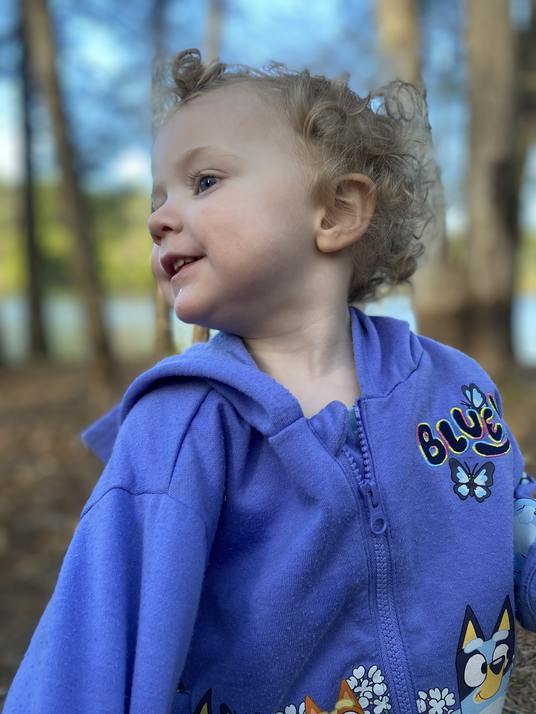
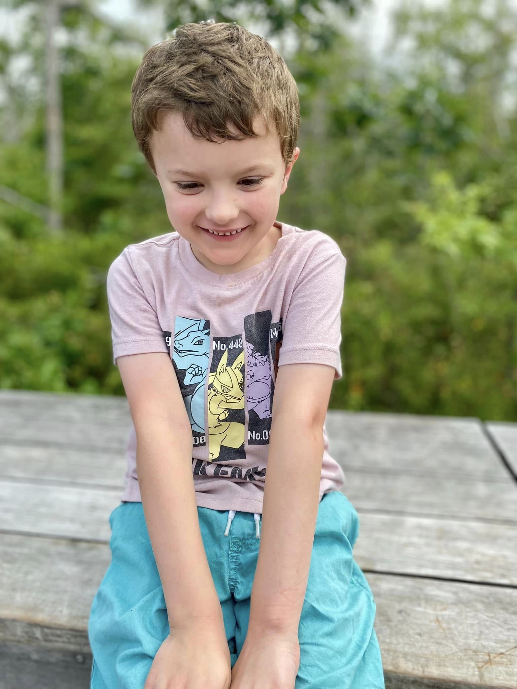

wife • mother • woman
In the quiet corners of New England, amidst misty hills and windswept woods, I craft stories with pixels, color, and heart. I'm Kate — a designer, an artist, a mother, and a seeker of meaning in the ordinary.
Much like the hobbits of the Shire, I believe in the beauty of simplicity, the strength of kindness, and the power of creating something that feels like home.
When I’m not designing, I’m often found delving into the virtual dungeons of skyrim, cultivating the green realms, or wandering with my children in search of wildflowers and adventure.